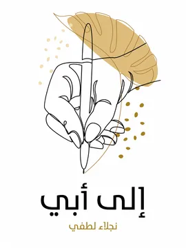

إلى أبي

قراءة عربية أصلية محددة النطاق في الصفحات 11، 13 إلى 15 من ملف PDF المرتبط، وليست تلخيصا كاملا للكتاب. نناقش ما تدعمه هذه المقاطع فقط.
رسالة أخيرة إلى الأب
تكتب لطفي رسالتها لتريح قلبها من عبء ثقيل يرزح تحته، وتطلب مسامحة أبيها على سوء الظن به حينًا وفورات الغضب حين كانت مراهقة تخاصمه وتغضب عليه. ثم تستعيد الحب الأول: كانت مدللته التي لا ترفض لها طلبًا، ترتدي جاكيت بدلته وحذاءه الكبيرين وتقول «أنا بابا أنا كبيرة»، وتمسكه يده ليمنعها من السقوط. وتتذكر المغامرة السرية التي أخفياها عن أمها حين ذهبا لخطب فتاة لصديقه، ويوم أخرجها من المدرسة مع جاراتها للنزهة والأيس كريم، ورقة قلبه حين كانت ترتجف من البرد فيفرك قدميها بيديه حتى تدفئا ويضمها لصدره: في حضنك لن يمسني سوء أبدًا.
زاوية وحدود القراءة
قراءة موجزة من ص ١١ ومن ص ١٣ إلى ص ١٥ من أصل ٨٦ صفحة، تعرض بداية الرسائل وفصل الحب الأول، لا الكتاب كاملًا.
الطبعة والقراءة
هذه النسخة من الكتاب صادرة ومتاحة مجانًا بموجب اتفاق قانوني بين مؤسسة هنداوي والسيدة الأستاذة نجلاء لطفي.
تنزيل PDF المجاني ↓ القراءة والمصدر الرسمي ↗